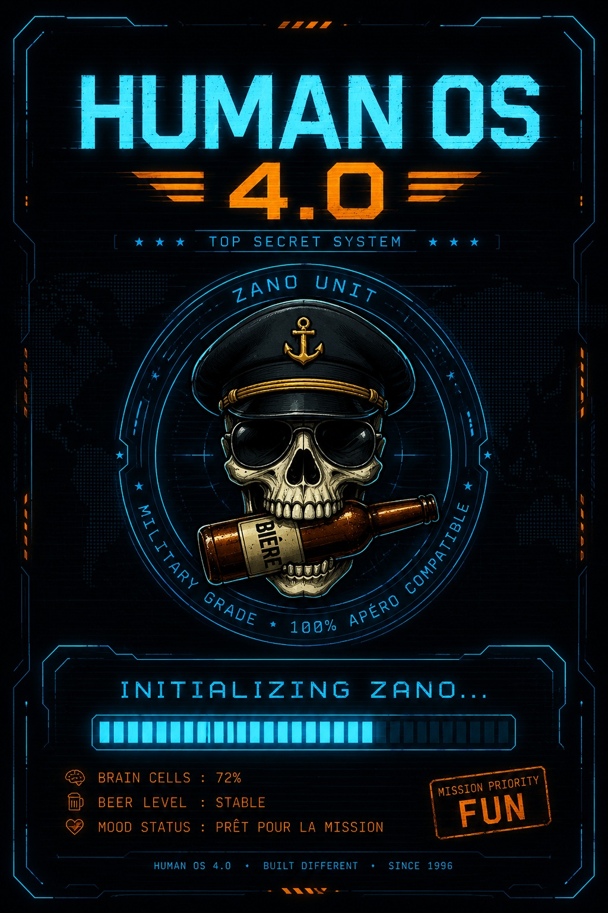

Mission septembre · Munich · bière · énigmes · chaos maîtrisé
Zano 40 ans
à l’Oktoberfest
Bienvenue dans le QG officiel de l’expédition. Une bande de personnages suspects, une ville mythique, des phrases de survie en allemand et un coffre-fort qui protège les secrets les plus dangereux de ZANO.

Emplacement photo
Place ta photo ici :
assets/zano-photo.jpg
WANTED
ZANO
40 ans
Chef de mission : OktoberfestDistribution officielle
La Squad de ZANO
Terrain d’opérations
Carte interactive de Munich
Allemand de survie
Traducteur commando bière
Munich emblématique & planqué
Lieux à explorer
Zone classifiée
Le coffre-fort des secrets de ZANO
Le coffre est maintenant un jeu de piste en 6 verrous. Chaque bonne réponse allume un fragment du code final. Les accents, majuscules et espaces ne comptent pas : seul l’esprit ZANO compte.
Code final
Récupère les 6 fragments pour former le code final.
Position du vrai secret de ZANO
Celui qui connaît le vrai secret attend ici :
43° 05' 59.528" N · 005° 53' 20.666" E
Format décimal : 43.099869, 5.889074
Ouvrir la position